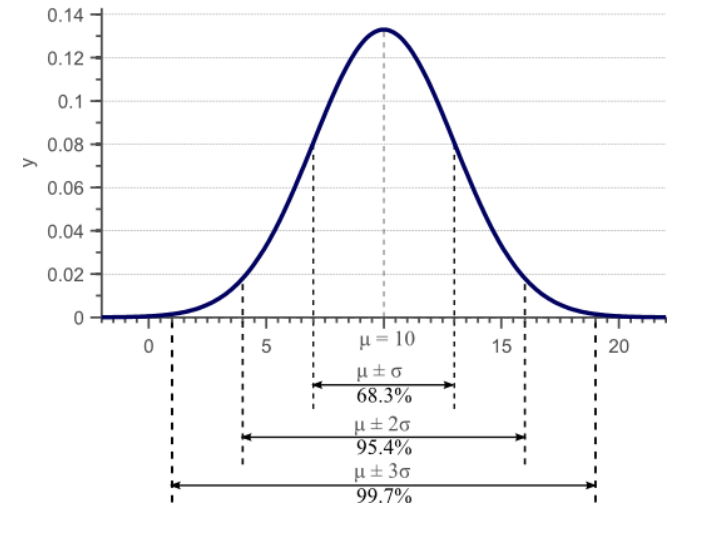

Covariance#
Preliminaries#
The sample mean \( \bar{x} \) is an unbiased estimator#
The sample mean \(\bar{x}\) is an unbiased estimator of the population mean \(\mu\) because its expected value is equal to the population mean.
Definition of an Unbiased Estimator#
An estimator \(\hat{\theta}\) of a parameter \(\theta\) is said to be unbiased if the expected value of the estimator is equal to the true value of the parameter:
In this context, \(\bar{x}\) is the estimator of \(\mu\), and it is unbiased if:
Proof#
Let’s prove that the sample mean \(\bar{x}\) is an unbiased estimator of the population mean \(\mu\).
Sample Mean: The sample mean \(\bar{x}\) for a random sample \(\{x_1, x_2, \ldots, x_n\}\) is defined as:
Expected Value of the Sample Mean: To find the expected value of \(\bar{x}\), we use the linearity property of expectation:
By the linearity of expectation, this can be written as:
Expected Value of Each Sample: Since each \(x_i\) is an individual sample from the population with mean \(\mu\), we have:
\( E[x_i] = \mu \)
Summing the Expected Values: Substituting \(E[x_i] = \mu\) into the previous equation gives:
Since \(\mu\) is a constant, we can factor it out of the sum:
Simplifying: The \(n\) terms cancel out, leaving:
This shows that the expected value of the sample mean \(\bar{x}\) is equal to the population mean \(\mu\).
Variance#
Variance measures the spread of a single random variable around its mean. For a random variable \( x \) with \( n \) samples, the variance \( \sigma^2_x \) is given by:
where:
\( n \) is the number of samples.
\( x_i \) is the \( i \)-th sample.
\( \bar{x} \) is the mean of the samples, defined as \( \bar{x} = \frac{1}{n} \sum^{n}_{i=1} x_i \).
The following figure shows concept of spread over mean.

Why is the variance calculated with a coefficient of \( \frac{1}{n-1} \) ? This is known as Bessel’s Correction.
The use of \( n-1 \) instead of \( n \) ensures an unbiased estimate of the population variance.
Covariance#
Covariance measures the degree to which two random variables vary together. For two random variables \( x \) and \( y \) with \( n \) samples, the covariance \( \sigma(x, y) \) is given by:
where:
\( y_i \) is the \( i \)-th sample of \( y \).
\( \bar{y} \) is the mean of the samples of \( y \), defined as \( \bar{y} = \frac{1}{n} \sum^{n}_{i=1} y_i \).
The variance \( \sigma^2_x \) of a random variable \( x \) can also be expressed as the covariance of \( x \) with itself:
Covariance Matrix#
The covariance matrix generalizes the concept of covariance to multiple dimensions (random variables). For \( d \) random variables, the covariance matrix \( C \) is a \( d \times d \) matrix where each element \( C_{i,j} \) represents the covariance between the \( i \)-th and \( j \)-th random variables:
Properties of the covariance matrix:
Dimension: \( C \in \mathbb{R}^{d \times d} \), where \( d \) is the number of random variables.
Symmetry: The covariance matrix is symmetric since \( \sigma(x_i, x_j) = \sigma(x_j, x_i) \).
Diagonal Entries: The diagonal entries are the variances of the individual random variables.
Off-Diagonal Entries: The off-diagonal entries are the covariances between different random variables.
The covariance matrix \( C \) for \( n \) samples and \( d \) dimensions can be calculated as:
where:
\( x_i \) is the \( i \)-th sample vector (a \( d \)-dimensional vector).
\( \bar{x} \) is the mean vector of the samples, defined as \( \bar{x} = \frac{1}{n} \sum^{n}_{i=1} x_i \).
For a two-dimensional example with variables \( x \) and \( y \), the covariance matrix \( C \) can be written as:
If \( x \) and \( y \) are independent (or uncorrelated), the covariance matrix simplifies to:
For standardized variables (with mean 0 and variance 1), the covariance matrix would approximate:
This matrix indicates that the variables are uncorrelated and have unit variance.
Example: Sampling from mean and different types of covariance.#
You can modify the elements of
cov_matrix = [[5, 1], [1, 1]]
in the following code.
import numpy as np
import matplotlib.pyplot as plt
# Number of samples
n = 1000
# Desired mean vector
mean = [3, 5]
# Covariance matrix
cov_matrix = [[5, 1], [1, 1]]
# Generate samples from the multivariate normal distribution
data = np.random.multivariate_normal(mean, cov_matrix, n)
# Split the data into x and y components
x = data[:, 0]
y = data[:, 1]
# Calculate the mean and covariance of the generated data
calculated_mean = np.mean(data, axis=0)
calculated_cov = np.cov(data, rowvar=False)
print("Generated Data Mean Vector:")
print(calculated_mean)
print("\nGenerated Data Covariance Matrix:")
print(calculated_cov)
# Plot the generated samples
plt.scatter(x, y, alpha=0.5)
plt.title('Generated Samples from Multivariate Normal Distribution')
plt.xlabel('x')
plt.ylabel('y')
plt.axis('equal')
plt.show()
Generated Data Mean Vector:
[2.98316128 5.05539397]
Generated Data Covariance Matrix:
[[5.0071994 1.09845549]
[1.09845549 0.99718128]]
{kind=link}
Eigenvalues and Eigenvectors of the Covariance Matrix#
The eigenvalues and eigenvectors of the covariance matrix play a crucial role in understanding the spread and orientation of the data. They are foundational in techniques like Principal Component Analysis (PCA), which is widely used for dimensionality reduction.
Covariance Matrix#
Given a dataset with \(n\) samples and \(d\) features, we can represent the data as a matrix \(X \in \mathbb{R}^{n \times d}\), where each row corresponds to a sample, and each column corresponds to a feature. The covariance matrix \(C \in \mathbb{R}^{d \times d}\) is given by:
Here, \(X^T\) is the transpose of \(X\).
Eigenvalues and Eigenvectors#
An eigenvalue \(\lambda\) and corresponding eigenvector \(v\) of the covariance matrix \(C\) satisfy the equation:
Properties and Interpretation#
Variance and Principal Components:
The eigenvalue \(\lambda_i\) represents the amount of variance in the data along the eigenvector \(v_i\).
Dimensionality Reduction:
By projecting the data onto the first \(k\) principal components, we can reduce the dimensionality of the data while retaining most of its variance. This is done by selecting the eigenvectors corresponding to the largest \(k\) eigenvalues.
Orthogonality:
The eigenvectors of a covariance matrix are orthogonal to each other. This means they are uncorrelated.
Symmetric Matrix:
Since the covariance matrix is symmetric, it has real eigenvalues and orthogonal eigenvectors.
Calculating Eigenvalues and Eigenvectors#
To calculate the eigenvalues and eigenvectors of the covariance matrix \(C\):
Form the Covariance Matrix: $\( C = \frac{1}{n-1} X^T X \)$
Solve the Characteristic Equation: $\( \text{det}(C - \lambda I) = 0 \)\( where \)\text{det}\( denotes the determinant and \)I\( is the identity matrix. Solving this equation gives the eigenvalues \)\lambda_1, \lambda_2, \ldots, \lambda_d$.
Find the Eigenvectors: For each eigenvalue \(\lambda_i\), solve:
to find the corresponding eigenvector \(v_i\).
Example#
Let’s consider a simple example with a 2-dimensional dataset to illustrate the concept:
Data Matrix:
Mean-Center the Data:
Covariance Matrix:
Solve for Eigenvalues and Eigenvectors:
Solving this gives \(\lambda_1 = 3.3333\) and \(\lambda_2 = 0\).
The corresponding eigenvectors can be calculated as:
Problem: Elongation of data#
To mathematically show why eigenvalues represent the elongation of data and eigenvectors represent the main axes of these elongations.
Covariance Matrix#
Given a dataset \(X\) with \(n\) samples and \(d\) features, the covariance matrix \(C\) of the centered data (mean-subtracted) is:
Eigen Decomposition of the Covariance Matrix#
The covariance matrix \(C\) can be decomposed into its eigenvalues and eigenvectors:
where:
\(V\) is a matrix whose columns are the eigenvectors \(v_1, v_2, \ldots, v_d\).
\(\Lambda\) is a diagonal matrix with eigenvalues \(\lambda_1, \lambda_2, \ldots, \lambda_d\) on the diagonal.
Interpretation of Eigenvalues and Eigenvectors#
Eigenvectors as Principal Axes:
The eigenvectors \(v_i\) are the directions in the feature space along which the variance of the data is maximized. These directions are orthogonal to each other, forming a new coordinate system. In this new coordinate system, the data variance is decoupled and each coordinate axis corresponds to one of the eigenvectors.
Eigenvalues as Measures of Variance:
The eigenvalues \(\lambda_i\) corresponding to each eigenvector \(v_i\) quantify the variance of the data along that direction. Specifically, \(\lambda_i\) is the variance of the data when projected onto the eigenvector \(v_i\).
Mathematical Proof and Intuition#
To understand why eigenvalues represent the elongation and eigenvectors the main axes, consider the transformation of the data using the eigen decomposition:
Transformation to Principal Component Space#
Let \(Y\) be the transformed data in the new basis defined by the eigenvectors:
Here, \(V\) is the matrix of eigenvectors. Each row of \(Y\) is a sample represented in the new coordinate system (principal component space).
Variance in the New Coordinate System#
In the principal component space, the covariance matrix of \(Y\) is:
Since \(Y = X V\), we have:
By the eigen decomposition of \(C\), we know \(C = V \Lambda V^T\), so:
since \(V^T V = I\), the identity matrix.
Thus, the covariance matrix of the transformed data \(Y\) is \(\Lambda\), which is a diagonal matrix with eigenvalues \(\lambda_i\). This shows that the variance in the direction of each principal component (eigenvector) is given by the corresponding eigenvalue.
Geometric Interpretation#
Elongation of Data:
The eigenvalues \(\lambda_i\) represent the amount of variance (spread) in the data along the direction of the eigenvector \(v_i\). Larger eigenvalues indicate greater spread (elongation) along that axis.
If \(\lambda_i\) is large, the data is stretched along the eigenvector \(v_i\). If \(\lambda_i\) is small, the data is compressed along \(v_i\).
Main Axes of Elongation:
The eigenvectors \(v_i\) indicate the directions of the principal axes of the data. The data points are spread out along these directions.
In the principal component space, the data is aligned with the eigenvectors, and the amount of spread along each axis is quantified by the corresponding eigenvalue.
Example with 2D Data#
Consider a 2D dataset where the covariance matrix \(C\) is given by:
Eigenvalues and Eigenvectors:
Solve the characteristic equation \(\text{det}(C - \lambda I) = 0\): $\( \text{det} \begin{pmatrix} 4-\lambda & 2 \\ 2 & 3-\lambda \end{pmatrix} = (4-\lambda)(3-\lambda) - 4 = \lambda^2 - 7\lambda + 8 = 0 \)$
The eigenvalues are \(\lambda_1 = 5\) and \(\lambda_2 = 2\).
The corresponding eigenvectors are \(v_1 = \begin{pmatrix} 1 \\ 1 \end{pmatrix}\) and \(v_2 = \begin{pmatrix} -1 \\ 2 \end{pmatrix}\).
Interpretation:
The data is stretched more along \(v_1 = \begin{pmatrix} 1 \\ 1 \end{pmatrix}\) (eigenvalue 5) than along \(v_2 = \begin{pmatrix} -1 \\ 2 \end{pmatrix}\) (eigenvalue 2).
The direction \(v_1\) corresponds to the principal axis with the largest variance (elongation), and \(v_2\) corresponds to the second principal axis with a smaller variance.
Eigenvalue Spread and Its Benefits#
What is Eigenvalue Spread?#
The eigenvalue spread refers to the distribution and range of eigenvalues of a matrix, such as the covariance matrix in Principal Component Analysis (PCA). The spread gives insight into how the variance is distributed across the different dimensions (principal components) of the data.
Understanding Eigenvalue Spread#
Wide Spread:
A wide eigenvalue spread means that there is a significant difference between the largest and smallest eigenvalues.
This indicates that the data has a few principal components (dimensions) with large variances and many with small variances.
Narrow Spread:
A narrow eigenvalue spread means that the eigenvalues are relatively close to each other.
Benefits of Understanding Eigenvalue Spread#
Dimensionality Reduction
Data Interpretation and Visualization
Noise Reduction
Mathematical Insight into Eigenvalue Spread#
Given a covariance matrix \(C\) of the data, the eigenvalues \(\lambda_1, \lambda_2, \ldots, \lambda_d\)
Range:
where \(\lambda_{\max}\) and \(\lambda_{\min}\) are the largest and smallest eigenvalues, respectively.
Variance Explained:
The proportion of variance explained by the \(i\)-th principal component is:
Homework: Working with eigen values of covariance#
Let’s check the following code. It selects the class 0 images from the MNIST dataset, displays 9 sample images, and then calculates the mean and covariance of the data. It then reduces the feature dimensions to 16 using the principal eigenvalues and reshapes the covariance matrix to 4x4. Finally, it resamples and generates 9 new samples from this distribution and displays them.
1- Check to image denoising 2-Check for human face images#
import numpy as np
import matplotlib.pyplot as plt
from sklearn.datasets import fetch_openml
from sklearn.decomposition import PCA
from scipy.stats import multivariate_normal
# Load MNIST dataset
mnist = fetch_openml('mnist_784', version=1)
data, targets = mnist['data'], mnist['target'].astype(int)
# Filter class 0 images
class_0_data = data[targets == 0]
# Display 9 sample images of class 0
def plot_images(images, title=""):
plt.figure(figsize=(6, 6))
for i in range(9):
plt.subplot(3, 3, i + 1)
plt.imshow(images[i].reshape(28, 28), cmap='gray')
plt.axis('off')
plt.suptitle(title)
plt.show()
# Select 9 random samples
sample_indices = np.random.choice(class_0_data.shape[0], 9, replace=False)
sample_images = class_0_data.iloc[sample_indices]
plot_images(sample_images.values, title="9 Sample Images of Class 0")
# Calculate the mean vector
mean_vector = np.mean(class_0_data, axis=0)
# Calculate the covariance matrix
covariance_matrix = np.cov(class_0_data, rowvar=False)
# Perform PCA to reduce dimensions to 16
pca = PCA(n_components=16)
reduced_data = pca.fit_transform(class_0_data)
# Get the reduced covariance matrix
reduced_cov_matrix = np.cov(reduced_data, rowvar=False)
# Reshape the 16x16 covariance matrix to 4x4
reshaped_cov_matrix = reduced_cov_matrix[:4, :4]
# Generate 9 new samples
generated_samples = multivariate_normal.rvs(mean=np.mean(reduced_data, axis=0)[:4], cov=reshaped_cov_matrix, size=9)
# Transform back to original space using PCA components
generated_samples_original_space = pca.inverse_transform(np.hstack([generated_samples, np.zeros((9, 12))]))
# Display the generated samples
plot_images(generated_samples_original_space, title="9 Generated Samples")
{kind=link}
{kind=link}